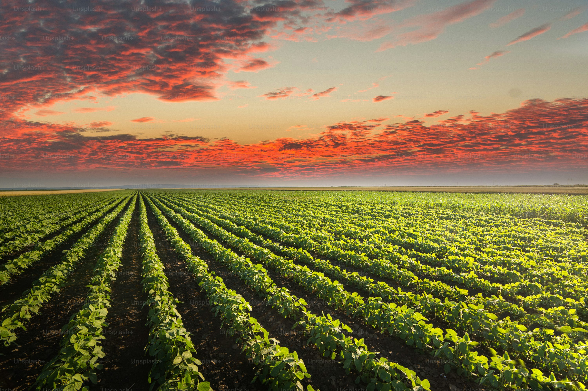

Entre o Campo e a Cidade
A agronomia é essencial para conectar o campo e a cidade, garantindo a produção de alimentos de qualidade com sustentabilidade. No campo, ela otimiza a produção agrícola por meio de técnicas que preservam o meio ambiente e aumentam a produtividade. Entre o campo e a cidade, os agrônomos garantem uma logística eficiente para abastecer as áreas urbanas, ao mesmo tempo que promovem práticas agrícolas responsáveis. Além disso, a agronomia contribui para a agricultura urbana, incentivando o cultivo local nas cidades. Dessa forma, ela não só apoia a segurança alimentar, mas também favorece a sustentabilidade e a integração entre os dois mundos.
Se você quer saber mais sobre como a agronomia pode impactar a sua vida e a sua cidade, entre em contato conosco!